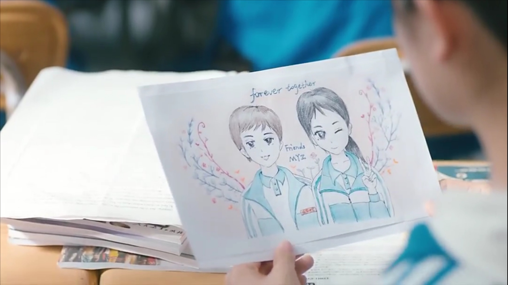

中了Low君的安利，入坑一部清新无敌结局暖暖的青春校园剧，你好旧时光。迫切渴求人与人之间来往，为了证明自己还活着，我深夜点开网页追剧。
振华三部曲之前火爆的最好的我们，也曾在我留学时光给予我奋斗拼搏的动力，满足我对几乎未曾参与的中国高中及高考的想象，当然也无可避免的酸了我一把。耿耿余淮这对可爱的死党，小情侣，总是关照对方却从不言表心意，看着人急死了。最终结局也略显遗憾，意难平。
你好旧时光是很早前就听说过的青春剧，一直记得宣传剧照上笑起来明媚不已的李兰迪，还有眼神里只有李兰迪的张新成。 当时觉得吧，再好也好不过最好的我们，就晾一边儿去了。
从第一集开始鲜活的人物就一个个蹦跶蹦跶出来。聪明有丝狡猾的余周周，不可一世的小公主凌翔茜，热心肠的公主守护者蒋川，还有小太阳一般明亮了夏天的林扬。四位主角的戏份精准到位，尤其是茜茜的扮演者汤梦佳，简直每一个表情都想截图下来，太生动太惹人爱了！配角也同样精彩，二次元不认命少女米乔，人情练达业务能力杠杠的奔奔，深沉感知力极强的陈桉，咋咋呼呼用生命八卦的陈瑶，一心想逆袭内心自卑的辛锐，游离于规则体系之外的徐志强；真心爱学生管理一把手的潘主任，萌萌哒随缘武老师，帅帅的年轻有为张峰老师。不知是不是因为同样留恋青涩的旧时光，一看到老师们的演绎的表情和发言，我都真实地以为自己是那个被对话的学生。穿着蓝色校服的学生们更是满眼鲜活，叽叽喳喳闯了祸也甚觉可爱。
全剧看下来，每个人物的发展都有很大变动，剧情也远远不仅限于周周林杨一条线，每条线都各有各的精彩和立意。凌翔茜由内心脆弱的小公主变成姿态镇定自成一派的真公主，周周林扬从心怀芥蒂到敞开心扉释解偏见，辛锐豁出一切争取高于她资源能力千倍的东西，而过程中不免迷失，米乔奔奔从各自放荡不羁到后来为了彼此的真心一起浪荡；似乎只有蒋川和徐志强一直坚守之前的信条，一个一如既往追随茜茜，一个永远不服管。哇话以致此竟然忘了楚天阔！楚大主席一直为了未来努力，而家境的窘迫时时刻刻提醒他改变现状，提醒着你没有别的选择。一方面这确实造就了精英，但谁知道这精英可见的未来里能不能得到一丁点儿的快乐！楚大主席和辛锐这点上倒是挺像的，而周周林杨他们站在了他俩的对立面，把友情和同学情看的比什么都重。周周似乎早已因变故而看破一切，不再执念，林扬更是家境优渥氛围轻松从不需要刻意用学习成绩来填补自尊。不同的境况造就了不同的性格，不同的选择。很难讲孰对孰错，一个人又能有几个能为其豁出一切去守护的至交呢？
米乔这条线是最深入人心的，下线当晚哭了好一会儿。米乔这个人大大咧咧的，平时把成绩，规范，安担，什么都不放在眼里。旁人以为米乔是个逆天少女啥都不怕，而她恰恰是患有先天性心脏病最早离开同学和人世的。这解释了为什么她活得这么潇洒，这么不安分，这么精彩。而她恨“彦一”不成刚的心理，也全然成立。拥有大好年华的大家，确因为竞争的激烈和过度的苛责被驯化成战战兢兢，患得患失，无论好与坏恨不得每分每秒都在焦虑的情绪奴隶。现实的残酷注定了不是每个人都可以拥有最好的机会，所以大家都步步为营生怕踏错一个脚印。适当地留心规划当然是百利的，可多少人因为这些强加的否定和苛责彻底否定了自己，失去了自己，变成下一个没有思想只会追随别人脚步的人!就像彦一美术那么有天赋还是觉得自己啥都不行，啥都不如别人。再者，现实的残酷也看从什么角度理解。从纯功利化考量现实固然十分残酷，可是现实也包括了其他美好的东西：比如一个人的内心，比如远方高耸入云的山，从未有人踏足的森林，比如人和人之间、文化与文化之间的一个个故事和它们折射的人性之复杂，比如可爱的熊猫和肆意奔跑的长颈鹿…若是只为了功利而忽视这大千世界的存在，那才真叫一叶障目，见识短浅。功利的最终目的，莫非是为了尽情享受这些非功利事物的美好？
显然米乔无法在有限的生命里见识到这世界的广度，因此米乔一眼看透了什么是最值得坚持最值得去做的。她大搞动漫社，但社团后来因为高中一切学业为先的体制和观念遭到危机。这和我当时在美高办书法社的经历如出一辙。她触动奔奔的心坎儿的，大概也是这股子澎湃的朝气。而可笑的是，一个个健全的人反倒一天垂头丧气唉声叹气。大概是都被竞争和冷漠的人情异化了吧。奔奔为米乔不离不弃着实令人敬佩，不管现实如何看到这样的刻画也够令人心暖了。米乔在人世足够精彩，留给周周彦一的都是她的嬉笑怒骂和坚持自己价值的勇气。
林扬和蒋川同样作为高度有人情味儿的人出现，且都把关怀和温暖带给了身边的人，无形地照耀他们。林扬种种对同学的体谅和交谈方式，蒋川次次在女生摔倒，女生出走时的挺身而出，和他们本身这对铁哥们儿，构成流离的旧时光里最让人心里一荡的记忆。毕竟，傲人的成绩，出彩的演出，抛头露脸的机会多少人都可以拥有，而行走发光小太阳，多少年都不见得一遇。遇见就是光芒万丈。